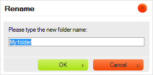

Panel slo鱉ek obsahuje "stromov矇 zobrazen穩" slo鱉ek, kter矇 m轡鱉ete proch獺zet. Slo鱉ky jsou pou鱉ity k uspo?獺d獺n穩 a t?穩d?n穩 Va禳ich soubor轡.
Zobrazen穩 slo鱉ek display je nazv獺no "stromov矇 zobrazen穩" proto鱉e hierarchie slo鱉ek je zobrazena jako v?tve stromu a podslo鱉ky jsou zobrazeny n穩鱉e s odsazen穩m vzhledem k jejich nad?azen羸m polo鱉k獺m. Panel slo鱉ek pou鱉穩v獺 stejn矇 grafick矇 zastoupen穩, kter矇 m轡鱉ete nal矇zt v mnoha modern穩ch opera?n穩ch syst矇mech.
Abyste slo鱉ku otev?eli a rozev?eli jej穩 podslo鱉ky, klikn?te na ikonku plus
( ) p?ed n獺zvem slo鱉ky.
Pokud ikona plus nen穩 p?穩tomna, pak slo鱉ka neobsahuje 鱉獺dn矇 podslo鱉ky.
) p?ed n獺zvem slo鱉ky.
Pokud ikona plus nen穩 p?穩tomna, pak slo鱉ka neobsahuje 鱉獺dn矇 podslo鱉ky.

Viz ?獺st "Na?穩t獺n穩 na po鱉adavek" n穩鱉e, pokud se chcete dozv?d?t v穩ce o procesu na?穩t獺n穩 v CKFinder.
Abyste zav?eli slo鱉ku a skryli (sbalili) jej穩 podslo鱉ku, klikn?te na ikonku m穩nus
( ) p?ed n獺zvem slo鱉ky.
) p?ed n獺zvem slo鱉ky.

Abyste vybrali slo鱉ku a u?inili z n穩 "sou?asnou slo鱉ku" v CKFinder, klikn?te na jej穩 n獺zev nebo ikonu. Vybran獺 slo鱉ka bude zv羸razn?na jinou barvou pozad穩.
Pokro?il矇 operace mohou b羸t provedeny ve slo鱉ce pou鱉it穩m jej穩ho Kontextov矇ho menu. V z獺vislosti na okolnostech mohou b羸t dostupn矇 n獺sleduj穩c穩 operace:

Pozn獺mka: N?kter矇 mo鱉nosti kontextov矇ho menu mohou b羸t zak獺z獺ny (a proto jsou za禳edl矇), v z獺vislosti na nastaven穩ch CKFinder, kter矇 vy鱉aduje V獺禳 spr獺vce syst矇mu.
Abyste vytvo?ili pod?azenou slo鱉ku uvnit? existuj穩c穩 slo鱉ky, zvolte mo鱉nost Nov獺 podslo鱉ka (New Subfolder) z kontextov矇ho menu nad?azen矇 slo鱉ky. V dialogov矇m okn? zadejte n獺zev nov矇 slo鱉ky, kter羸 bude zobrazen. Jakmile nov矇 slo鱉ce d獺te n獺zev a dialogov矇 okno zav?ete, bude slo鱉ka vytvo?ena.

Ne v禳echny znaky mohou b羸t pou鱉ity v n獺zvech slo鱉ek a soubor轡 kv轡li omezen穩m
syst矇m轡, kde je CKFinder spu禳t?n. Mezi znaky, kter矇 nemohou b羸t pou鱉ity v n獺zvech
slo鱉ek a soubor轡 jsou: \ / :
* ? " <
> a |.
Pro p?ejmenov獺n穩 slo鱉ky zvolte mo鱉nost P?ejmenovat (Rename) z kontextov矇ho menu nebo pou鱉ijte kl獺vesovou zkratku F2. Zadejte nov羸 n獺zev slo鱉ky v dialogov矇m okn?, kter矇 bude zobrazeno, co鱉 p?ep穩禳e existuj穩c穩 n獺zev. Jakmile zad獺te nov羸 n獺zev a dialogov矇 okno zav?ete, slo鱉ka bude p?ejmenov獺na.

Jak ji鱉 bylo ?e?eno v羸禳e, ne v禳echny znaky mohou b羸t pou鱉ity pro n獺zvy slo鱉ek a soubor轡 kv轡li omezen穩m
syst矇m轡 kde je CKFinder spu禳t?n. Mezi znaky, kter矇 nemohou b羸t pou鱉ity v n獺zvech
slo鱉ek a soubor轡 jsou: \ / :
* ? " <
> a |.
Upozorn?n穩: Kdy鱉 slo鱉ku p?ejmenujete, odkazy ?i vlo鱉en穩 m矇di穩 dostupn矇 na jin羸ch str獺nk獺ch a odkazuj穩c穩 na soubory ?i slo鱉ky uvnit? p?ejmenovan矇 slo鱉ky budou po禳kozeny a proto nebudou dostupn矇. Z tohoto d轡vodu bu?te p?i pou鱉穩v獺n穩 t矇to funkce opatrn穩.
Ko禳穩k je virtu獺ln穩 odkladn矇 m穩sto, kter矇 m轡鱉e b羸t n獺pomocn矇, pokud pot?ebujete prov矇st d獺vkov矇 operace se soubory. Operace kop穩rov獺n穩 a p?esunov獺n穩 jsou pops獺ny v ?獺sti "Ko禳穩k" u鱉ivatelsk矇 p?穩ru?ky.
Abyste slo鱉ku smazali, v?etn? jej穩ho obsahu, zvolte mo鱉nost Smazat (Delete) z jej穩ho kontextov矇ho menu nebo pou鱉ijte kl獺vesu Del. Bude zobrazena potvrzovac穩 zpr獺va, kter獺 zajist穩, 鱉e tuto operaci opravdu chcete prov矇st. Jakmile smaz獺n穩 potvrd穩te, slo鱉ka bude odstran?na.
Upozorn?n穩: Tuto operaci nelze vr獺tit zp?t. Jakmile slo鱉ku a jej穩 obsah sma鱉ete, odstran?n矇 soubory ji鱉 nelze obnovit.

Upozorn?n穩: Kdy鱉 slo鱉ku sma鱉ete, odkazy ?i vlo鱉en穩 m矇di穩 dostupn矇 na jin羸ch str獺nk獺ch a odkazuj穩c穩 na soubory ?i slo鱉ky uvnit? p?ejmenovan矇 slo鱉ky budou po禳kozeny a proto nebudou dostupn矇. Z tohoto d轡vodu bu?te p?i pou鱉穩v獺n穩 t矇to funkce opatrn穩.
Nejd轡le鱉it?j禳穩 rozd穩l mezi CKFinder a stromov羸mi strukturami slo鱉ek, kter矇 naleznete ve stoln穩ch opera?n穩ch syst矇mech je ten, 鱉e v CKFinder jsou slo鱉ky na?穩t獺ny na "po鱉adavek". To znamen獺, 鱉e aplikace nena?穩t獺 celou stromovou strukturu slo鱉ky najednou, ale m穩sto toho na?te malou ?獺st, kdy鱉 je slo鱉ka rozbalov獺na. Tato funkce je pou鱉穩v獺na ve v?t禳in? pokro?il羸ch internetov羸ch aplikac穩 jako CKFinder a umo鱉?uje 禳et?it p?enesen獺 data a ?as pro na?穩t獺n穩.
Pro ozna?en穩, 鱉e jsou slo鱉ky na?穩t獺ny m轡鱉e b羸t zobrazen 禳t穩tek Na?穩t獺n穩... (Loading..) p?i rozbalen穩 slo鱉ky:

?t穩tek automaticky zmiz穩, kdy鱉 jsou v禳echny po鱉adovan矇 slo鱉ky na?teny.